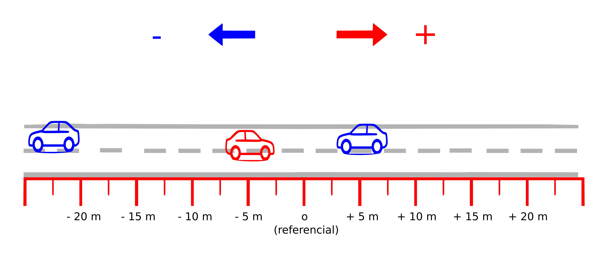
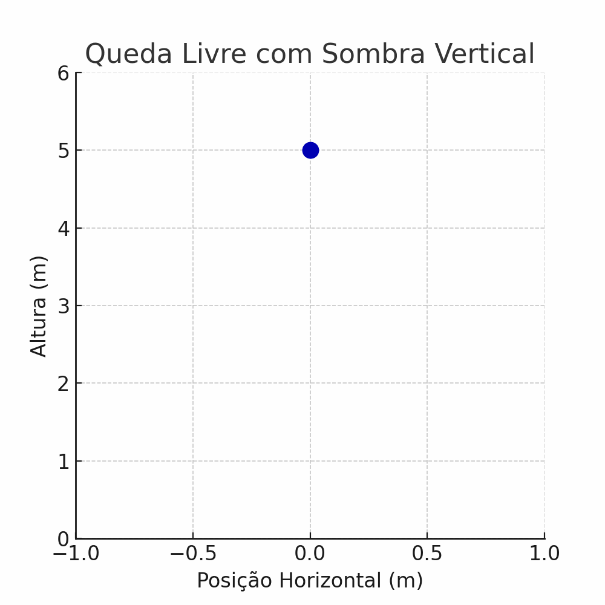
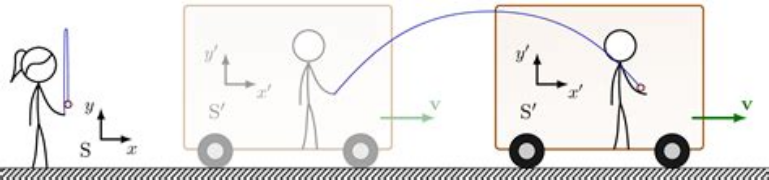
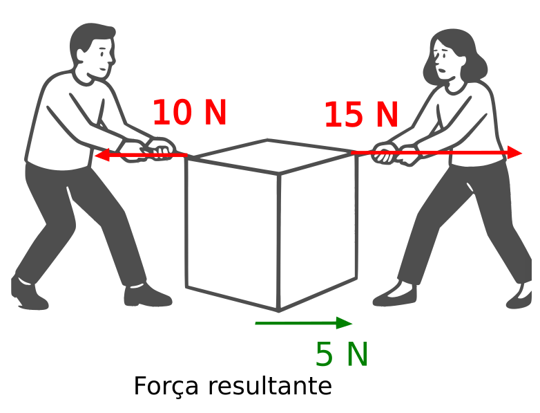
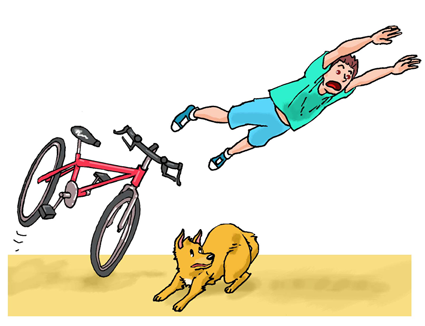
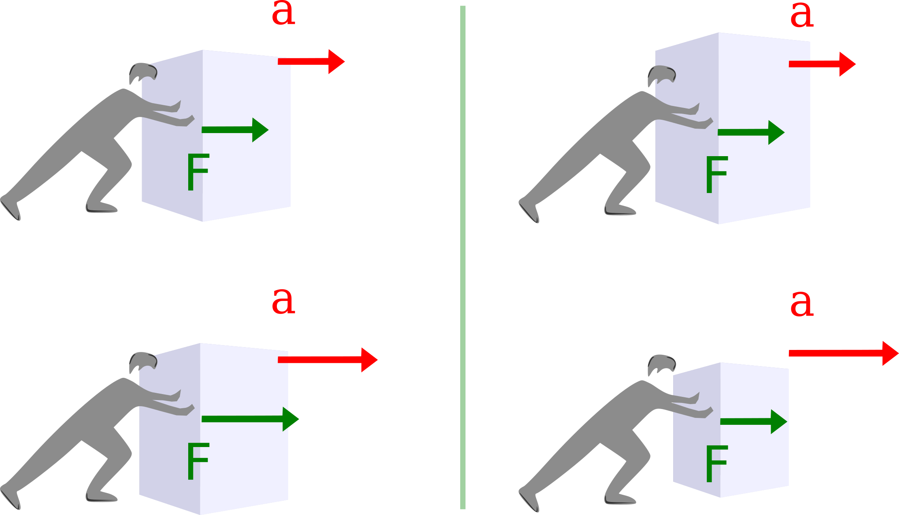

Física Aplicada - TA
Table of Contents
DADOS
| CÓDIGO | GTOPEFISAPL00 - MC-FÍSICA APLICADA - T1 (ABERTA) |
| CURSO | CURSO SUPERIOR DE TECNOLOGIA EM ALIMENTOS |
| SEMESTRE | 2026.2 |
| LOCAL | Sala 26 - TA1V |
| CH | 60 / 60 |
| HORÁRIO | 4T123 (27/07/2026 - 15/12/2026) |
- EMENTA
- Medidas e conversões,
- Álgebra vetorial, Movimentos unidimensionais e bidimensionais,
- Fases da matéria,
- Propriedade térmica dos alimentos,
- Calorimetria nos alimentos, Propagação do calor nos alimentos,
- Níveis de energia dos alimentos,
- Óptica nos alimentos.
MEDIÇÕES E CONVERSÕES
Tópicos da ementa
- Medidas e conversões;
- instrumentos de medição;
- teoria do erro e análise estatística.
Explorando a densidade de algumas substâncias
Tabela de comparação entre valores de densidade de algumas substâncias
Valores em gramas por centímetro cúbico (g/cm³) à temperatura ambiente (~25°C), salvo indicação contrária.
| Substância | Líquido (g/cm³) | Sólido (g/cm³) | Observação no cotidiano |
|---|---|---|---|
| Água | 1,00 (a 4°C) | 0,92 (gelo) | Gelo flutua na água. Cubos de gelo boiam no copo. |
| Mercúrio | 13,6 (25°C) | 14,2 (-39°C) | Único metal líquido à temperatura ambiente. 1 L pesa 13,6 kg! |
| Óleo de cozinha | 0,92 | 0,91 | Flutua na água. Quando frita, fica por cima da água. |
| Álcool etílico | 0,79 | 0,81 | Mais leve que a água. Em drinques, fica na parte de cima. |
| Leite integral | 1,03 | ~1,05 | Mais denso que a água. O creme (gordura) sobe. |
| Mel | 1,42 | ~1,45 | Muito denso. Afunda na água. É pesado para o volume. |
| Gasolina | 0,74 | 0,78 | Mais leve que a água. Vazamentos boiam. |
| Sal (NaCl) | — | 2,16 | Só existe sólido. Afunda rapidamente na água. |
| Manteiga | 0,91 (derretida) | 0,86 | Sólida flutua na água (menos densa). |
| Ferro | 7,0 (1538°C) | 7,87 | Muito denso. Panela de ferro é pesada. |
| Chumbo | 10,7 (327°C) | 11,34 | Muito pesado. Bola de chumbo do tamanho de laranja pesa >5 kg. |
| Ouro | 17,3 (1064°C) | 19,3 | Um dos metais mais densos. Pepita pequena já é pesada. |
| Plástico (PE) | 0,79 (derretido) | 0,94 | Flutua na água. Garrafas PET boiam em rios. |
| Glicerina | 1,26 | 1,30 | Mais densa que a água. Usada em sabonetes e xampus. |
| Querosene | 0,81 | 0,84 | Menos denso que a água. Usado em lampiões. |
Observações Importantes
- REGRA GERAL
- A maioria das substâncias
aumentaa densidade ao solidificar. - Partículas se aproximam → volume diminui → densidade aumenta.
- Exemplo: ferro líquido (7,0) → ferro sólido (7,87)
- A maioria das substâncias
- Exceção: água
- Água sólida (gelo) é
menosdensa que a água líquida. - Por isso o gelo flutua.
- Isso é essencial para a vida nos oceanos: o gelo forma uma camada na superfície e protege a água abaixo.
- Água sólida (gelo) é
- Óleos e gorduras
- São sempre menos densos que a água.
- Óleo, manteiga, azeite flutuam na água.
- Por isso vemos manchas de óleo boiando.
- Mercúrio é extremamente denso
- 1 litro de mercúrio pesa 13,6 kg (água pesa 1 kg).
- Objetos de ferro (densidade 7,87)
flutuamno mercúrio!
- Temperatura e densidade
- Os valores são para
temperatura ambiente(~25°C), salvo indicação. - Em geral:
quente = menos denso(expande);frio = mais denso(contrai).
- Os valores são para
Noções sobre Teoria do Erro
Algarismos significativos
Matematicamente temos que
\( 1,900 = 1,90 = 1,9 \)
porém, no contexto das medidas, usamos a quantidade de casas após a virgula para indicar a precisão da medida (ou do resultado de um cálculo que se utiliza de medições)
Exemplo:
Um valor de comprimento expresso em:
a)
\( L = 1,900 \, m\)
indica que a precisão do instrumento é em milímetroe (mm);
b)
\( L = 1,90 \, m\)
indica que a precisão é em centímetros (cm);
c)
\( L = 1,9 \, m\)
indica que a precisão é em decímetros (dm).
Arredondamento numérico
Nesse contexto, podemos ter que arredondar valores após cálculos. Como exemplo, imagine que, após um cálculo, obtemos um valor com 5 casas decimais, mas queremos arredondar para duas. A regra é olhar para o número que será desprezado, verificando se
- é menor que 5
- é maior ou igual a 5
Exemplos:
- \( 1,78901 \rightarrow 1,79\)
- \( 1,78321 \rightarrow 1,78\)
- \( 1,78531 \rightarrow 1,79\)
Uma observação importante: lembre-se que no inglês, a função do ponto e da virgula em um número é diferente do português.
Exemplo:
Dois mil dólares: R$ \(2,000.00\)
Dois mil reais: U$ \(2.000,00\)
Teoria do erro
- O que é medir?
- É comparar uma quantidade com uma unidade padrão. Nenhuma medida é perfeita; toda medida tem um erro (incerteza) associado.
- Os três tipos de erros básicos:
- Erro de Resolução (limite do instrumento): É o menor valor que o instrumento consegue mostrar.
- Exemplo: Nossa régua media só até 1 mm; não dava para ver 0,5 mm. Por isso, já sabíamos que ali tinha uma incerteza.
- Erro Sistemático (o "vício"): É o erro que acontece sempre no mesmo sentido (para mais ou para menos) se não tomarmos cuidado.
- Exemplo: A paralaxe (olhar a régua de lado) ou o atrito do ar com o pêndulo. Esse erro prejudica a exatidão (deixa o resultado longe do valor verdadeiro).
- Erro Aleatório (o "acaso"): É aquele erro que varia para mais ou para menos, sem regra fixa.
- Exemplo: O tempo de reação do nosso dedo ao apertar o cronômetro. Cada um apertou num tempo diferente. Esse erro prejudica a precisão (deixa os resultados espalhados).
- Erro de Resolução (limite do instrumento): É o menor valor que o instrumento consegue mostrar.
- Como diminuir os erros?
- Depende do contexto das medições;
- Como fizemos isso nas medições de oscilação de um pêndulo simples?
- Definições matemáticas
Média aritmética
\(\bar{T} = \frac{1 }{N}\cdot\sum_{i=1}^N T_i \)
Desvio:
\( D = |T_i-\bar{T}| \)
Desvio médio
\( DM = \frac{1}{N} \cdot \sum_{i=1}^N |T_i-\bar{T}| \)
Desvio padrão
\( DP = \frac{1}{N} \cdot \sqrt{ \sum_{i=1}^N (T_i - \bar{T})^2} \)
Atividade prática
- Parte I - Medições das dimensões de um quadro
- Obter o valor das dimensões e área do quadro da sala;
- Valores e cálculo sem utilizar o conceito de algarismos significativos;
- Valores e cálculo utilizando o conceito de algarismos significativos.
- Parte II - Medidas simples do perído oscilações de um pêndulo
- Medições de uma única oscilação por vez;
- Medir 10 vezes;
- Comparar valores com os grupos dos colegas;
- Discussões sobre erros: evitáveis e não evitáveis.
- Parte III - Medicas mais elaboradas do período de oscilações de um pêndulo
- Medição de 10 oscilações para reduzir o erro;
- Conjunto de 10 valores;
- calcular média;
- calcular o desvio médio;
- calcular o desvio padrão;
- comparar resultados com os dos colegas;
- revisar conceitos e discutir resultados.
TÓPICOS EM MECÂNICA
Tópicos da ementa abordados nessa seção
- Álgebra vetorial;
- Movimentos unidimensionais e bidimensionais.
Introdução
A mecânica é a área da física que estuda os movimentos de modo geral; desenvolvendo conceitos e estabelecendo princípios que buscam explicar por que e como os movimentos acontecem.
É uma área geral que pode ter várias aplicações e contendo várias subáreas, como: mecânica celeste, mecânica de corpos rígidos, mecânica de fluidos, mecânica de motores etc.
Animação do pêndulo de Newton.

Fonte: DemonDeLuxe (Dominique Toussaint), CC BY-SA 3.0, via Wikimedia Commons
Cinemática
Visão geral
A Cinemática é o estudo do movimento dos corpos sem se preocupar com a análise das suas causas. Nesse tópico iremos introduzir os conceitos básicos relacionados ao movimento como:
| Conceito | Descrição |
|---|---|
| Referencial | Ponto de referência (ponto zero). |
| Posição | posição de cada carro em relação ao referencial. |
| Deslocamento | Variação da posição em um certo intervalo de tempo. |
| Velocidade | Razão entre um deslocamento e intervalo de tempo correspondente. |
| Aceleração | Razão entre variação de velocidade e intervalo de tempo correspondente. |
Velocidade
Considere as imagens abaixo e tente identificar cada um dos conceitos descritos anteriormente.
Descrição do movimento de carros a partir de um referencial, em um certo instante de tempo \(t_0\).

Fonte: imagem criada pelo autor.
Por exemplo, na representção acima, as posições dos três carros são, respectivamente:
\[ -20 \, m \,, \qquad -10 \, m \qquad \text{e} \quad +15\,m\]
Descrição do movimento de carros a partir de um referêncial, em um certo instante posterior (final) \(t_f\).

Fonte: imagem criada pelo autor.
Sobre as duas figuras acima, podemos afirmar, entre outras coisas, que:
A posição do carro vermelho era de \(S_0=-10\,m\) no instante \(t_0\), e foi para \(S_f = -5\,m\) no instante \(t_f\).
Se, por exemplo, \(t_0 = 10\,s\) e \(t_f=12 s\); então, o intervalo de tempo em que ocorre o deslocamento é de \(\Delta t =12-10 =2s\).
A velocidade é a razão entre o deslocamento \(\Delta S = -5 -(-10) = 5\, m)\) e o intervalo de tempo correspondente. Assim,
\[ v = \frac{\Delta S}{\Delta t} = \frac{5\,m}{2\,s} = 2,5\, m/s\]
Aceleração
Quando há uma variação de velocidade (aumento ou redução) existe uma aceleração.
Variação de velocidade entre os instantes \(t_0=5\,s\) e \(t_f = 15\,s\).
Fonte: imagem criada pelo autor.
Considere agora que ocorreu um aumento de velocidade durante um intervalo de \(10 \, s\) (\(\Delta t = 15 - 5 = 10\,s\)). A velocidade foi de \(v_0 = 5\,m/s\) para \(v_f=55\,m/s\).
A aceleração, nesse caso, será:
\[ a = \frac{\Delta v}{\Delta t} = \frac{50m/s}{10s} = \frac{10m/s}{1s}\]
Escrevemos
\[ a = 10\,m/s^2 \]
Exemplo de movimento acelerado: Queda livre
Aceleração de \(10\,m/s^2\), para baixo. Ou seja, uma acrésimo de \(10m/s\) na velocidade a cada segundo.
Queda livre de um objeto a 5 m .

Fonte: imagem criada pelo autor.
Leis de Newton
Introdução
As de Newton são a base para o estudo da mecânica, ela estabelece os princípios básicos para explicar como e por que os movimentos acontecem.
Antes de iniciar, vamos analisar dois conceitos importantes para entender as leis de Newton: referenciais e forças.
Referenciais
O movimento pode ser diferente para dois observadores diferentes.

Fonte:
Força
- Forças de contato e forças de ação à distância
Exemplos de força: tração, magnética, gravitacional.

Fonte: Force.png: Penubagderivative work: Arnaud Ramey, Public domain, via Wikimedia Commons
- Forças de atrito
- Força de resistência do ar
A força de resistência do ar sustenta um paraquedas, por exemplo.

Fonte: Pearson Scott Foresman, Public domain, via Wikimedia Commons
- Força resultante
Força é uma grandeza que tem direção (chamamos de grandezas vetoriais) de modo que, quando duas ou mais forças atuam em um corpo, temos que considerar as direções dessas forças.
Assim, a força resultante é o resultado final da aplicação de todas essas forças.
A força resultante é o resultado líquido de todas as forças atuantes.

Fonte: criado pelo autor.

Primeiria Lei: Inércia
- Enunciado da lei
Todo objeto permanece em seu estado de repouso ou de velocidade constante em linha reta, a menos que uma força resultante não nula seja exercida sobre ele.
- Movimento em linha reta
Quando a bicicleta freia, a pessoa tende a continuar o movimento em linha reta.

- Inércia
- Inércia é como uma "preguiça" que objetos com massa tem de deixar o seu estado de repouso,ou de movimento uniforme.
- Massa é a quantidade de inércia de um corpo: Quanto maior a massa, mais difícil será para mudar o movimento do corpo.
Efeito da inércia: se a força for suave, a corda de cima se rompe, se a força for abrupta, a corda de baixo se rompe.

Fonte: MikeRun, CC BY-SA 4.0, via Wikimedia Commons
- Referenciais, força centrífuga.
Os Referenciais inerciais - aqueles que respeitam a primeira lei
Ou seja
Em referenciais não inerciais (referenciais acelerados) os corpos são acelerados mesmo na ausência de forças reais.
Como exemplo, do ponto de vista de quem está em movimento circular, existe uma aceleração centrífuga, a qual associamos uma força centrífuga. Mas essa força não existe de fato, ela se deve ao referencial estar acelerado (movimento circular)
Quem está dentro de um automóvel que faz uma curva, sente uma força para fora da curva.

Fonte: Thilp, CC0, via Wikimedia Commons
Por que Stephen Hawking está flutuando?

Fonte: Jim Campbell/Aero-News Network, CC BY 3.0, via Wikimedia Commons

{kind=link}
{kind=link}
{kind=link}
.png){kind=link}
{kind=link}
{kind=link}
{kind=link}
{kind=link}
Segunda Lei: Princípio fundamental da dinâmica
A aceleração de um objeto é diretamente proporcional à força resultante atuando sobre ele; tem o mesmo sentido que essa força e é inversamente proporcional à massa do objeto.
A aceleração é proporcional à força aplicada, e inversamente proporcional à massa do objeto.

- A aceleração é diretamente proporcional à força aplicada
A aceleração é inversamente propocional à massa
Matematicamente, temos:
\[ a = \frac{F}{m}\]
ou
\[ F = m a\]
Terceira Lei: Ação-reação
Sempre que um objeto exerce uma força sobre outro objeto, este outro objeto exerce uma força igual e oposta sobre o primeiro.
Ou
Para cada força de ação existe sempre uma força de reação, de mesmo módulo e orientação oposta,
Par ação-reação quando uma pessoa empurra outra.

Fonte: MikeRun, CC BY-SA 4.0, via Wikimedia Commons
{kind=link}
Par ação-reação em forças de ação à distância, nesse exemplo, a força gravitacional.

Fonte: Svjo, CC BY-SA 4.0, via Wikimedia Commons
{kind=link}
Leis de Conservação: Energia, momento linear e momento angular
Principio da conservação da energia
A energia é uma quantidade que se conserva, ou seja, não podemos criar nem destruir energia, apenas transformar de um tipo em outra.
Energia cinética
A energia associada ao movimento de um objeto de massa \(m\) com velocidade \(v\) é calculada pela expressão
\( E_c = \frac{m v^2\}{2} \)
Energia potencial gravitacional
A energia associada a posição de um objeto, de massa \(m\), em uma altura \(h\), submetido a uma gravidade caracterizada pela aceleração \(g\) (na superfície da terra, usaremos o valor \(g = 10 m/s^2\)
\[E_g = m g h \]
Trabalho de uma força
A energia fornecida ao aplicar uma força \(F\) em um objeto, movendo-o na mesma direção da aplicação da força, por uma distância \(d\) é calculada por
\[W = F d\]
Conservação da energia mecânica
TÓPICOS EM TERMODINÂMICA - PARTE 1
Tópicos da ementa abordados nessa seção
- Fases da matéria,
- Propriedade térmica dos alimentos,
TÓPICOS EM TTERMODINÂMICA - PARTE 2
Tópicos da ementa abordados nessa seção
- Calorimetria nos alimentos, Propagação do calor nos alimentos,
- Níveis de energia dos alimentos,
TÓPICOS EM ÓPTICA
Tópicos da ementa abordados nessa seção
- Óptica nos alimentos.
Listas de exercícios
- Primeira Lista de Exercícios - (lista de revisão)
- Segunda Lista de Exercícios - (para entregar de forma física, em dupla, para entregar no dia 26 de agosto)